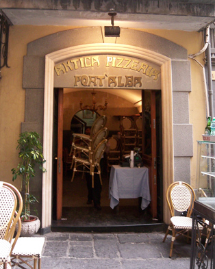

אנטיקה פיצרייה פורטאלב - שהייה של חצי יום
הפיצה היא מאכל איטלקי פופולרי ומסורתי שנחשב לאחד מהמאכלים הלאומיים של איטליה וכולל את 3 צבעי דגל איטליה- הבצק הלבן, רוטב העגבניות האדום והבזיליקום הירוק. על פי האמונה "האנטיקה פיצרייה פורטאלבה" היא הפיצרייה הראשונה בעולם שהוקמה בשנת 1738 כדוכן פיצה קטן והפכה לפיצרייה. בפיצרייה נשהה כ-3 שעות. קודם כל נשב בפיצרייה ונאכל פיצה מהפיצרייה הראשונה בעולם. לאחר הארוחה נשמע הסבר וסיפורים על הקמת המקום ועל מסורת הכנת הפיצה המסורתית באיטליה. לאחר מכן נמשיך לתחנה הבאה- הפסל של ויטוריו אמנואלה.
